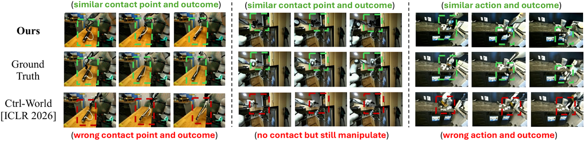
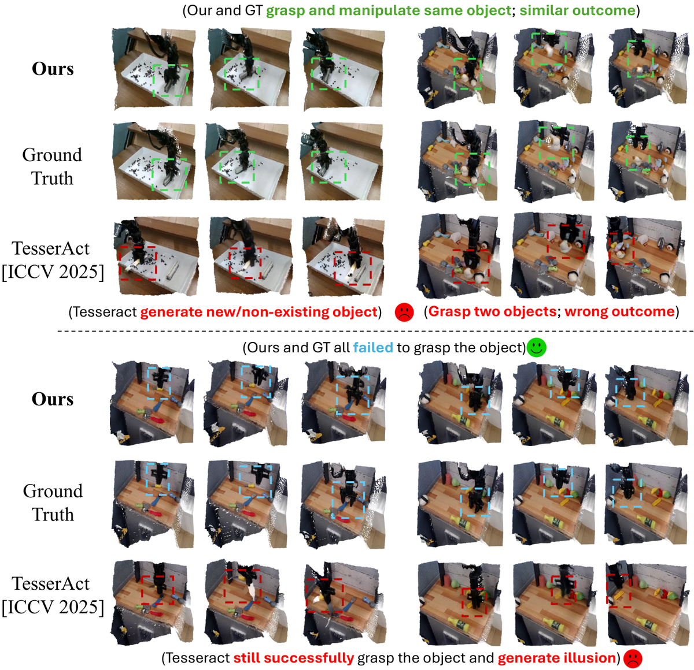

Kinema4D
简单摘要
模拟机器人与世界的交互是体现人工智能的基石。最近，一些作品在利用视频生成来超越传统模拟器的严格视觉/物理限制方面表现出了希望。

因此，现有方法很难模拟精确的交互效果，例如材料变形或遮挡物体动力学（参见图：定性，图：定性）。这一动机进一步基于支持我们设计理念的两个协同见解——将模拟分解为机器人控制及其由此产生的环境变化。
核心创新
第一，模拟机器人与世界的交互是嵌入式人工智能的基石。
第二，最近，一些作品在利用视频生成来超越传统模拟器的严格视觉/物理限制方面表现出了希望。
第三，然而，它们主要在 2D 空间中运行或由静态环境线索引导，忽略了机器人与世界的交互本质上是 4D 时空事件，需要精确的基本现实。
技术细节
对于未知的平台，我们实现了重建管道。机器人 URDF 模型中的关节锚点被映射到规范重建空间内的相应坐标。扩散过程通过优化条件去噪目标来学习生成该潜在序列。


3.1 运动学控制
对于未知的平台，我们实现了重建管道。机器人 URDF 模型中的关节锚点被映射到规范重建空间内的相应坐标。这确保了解析运动链可以直接驱动重建的网格段。
3.2 4D 生成建模
扩散过程通过优化条件去噪目标来学习生成该潜在序列。该条件指导去噪过程，以确保生成的视频遵循特定的输入。去噪潜伏由共享 VAE 解码器处理，以重建完整世界点图/RGB 序列。
3.3 Robo4D-200k：大规模 4D 机器人数据集
首先，我们聚合来自领先的现实世界机器人演示存储库（包括 DROID 、 Bridge 和 RT-1 ）的 2D RGB 视频流。我们广泛尝试了几种最先进的 3D/4D 重建框架，包括 MonST3R 、 MegaSaM 、 VGGT/VGGT4D 、 ViPE 和 ST-V2。它用于为真实数据集重建高质量、像素对齐的 4D 轨迹。
$$ \begin{bmatrix} u \cdot z \\ v \cdot z \\ z \end{bmatrix} = \mathbf{K} \cdot \mathbf{T}_{recon}^{cam} \cdot \mathbf{T}_{k,t}^{recon} \cdot \mathbf{x}, $$
这条式子把若干坐标、状态或参数组织成矩阵/向量形式，用于后续几何变换、投影计算或状态更新。理解时重点看每一项分别代表哪一类量，以及这个矩阵最终服务于哪一步运算。
$$ \mathcal{L}_{vid} = \mathbb{E}_{\mathbf{z}_0, \epsilon, \tau, \mathbf{c}} \left[ \| \epsilon - \epsilon_\theta(\mathbf{z}_\tau, \tau, \mathbf{c}) \|^2 \right], $$
这条式子给出了训练阶段的优化目标。阅读时可以先看左侧到底在约束什么，再区分右侧每一项对应的是重建误差、正则项还是辅助监督。
实验结论
实验部分主要围绕 这一优势使我们的框架能够在所有指标中实现领先或第二好的性能 展开。结果表明，我们将我们的方法与输出 2D 视频的最佳基线（Ctrl-World）进行比较，重点关注 2D 视频模式下的定性结果。
| Method | Action | Output | PSNR | SSIM | L2_latent | FID | FVD | LPIPS |
|---|---|---|---|---|---|---|---|---|
| UniSim [ICLR'24] | Text | RGB | 19.32 | 0.681 | 0.2120 | 32.3 | 153.2 | 0.175 |
| IRA-Sim [ICCV'25] | Emb. | RGB | 20.21 | 0.813 | 0.1722 | 25.2 | 126.0 | 0.135 |
| Cosmos [arXiv'25] | Emb. | RGB | 20.39 | 0.787 | 0.1935 | 27.1 | 113.4 | 0.110 |
| EVAC [arXiv'25] | Emb.+2D | RGB | 20.88 | 0.832 | 0.1896 | 29.3 | 122.0 | 0.150 |
| ORV [CVPR'26] | Emb.+3D | RGB | 19.45 | 0.790 | 0.2002 | 30.1 | 130.1 | 0.143 |
| Ctrl-World [ICLR'26] | Emb. | RGB | 21.03 | 0.803 | 0.1533 | 24.9 | 112.8 | 0.122 |
| TesserAct [ICCV'25] | Text | 4D | 19.35 | 0.766 | 0.1911 | 29.5 | 120.3 | 0.158 |
| Ours | 4D | 4D | 22.50 | 0.864 | 0.1380 | 25.2 | 98.5 | 0.105 |
| Method | CD-L_1 | CD-L_1 (temp) | CD-L_2 | CD-L_2 (temp) | F-Score | F-Score (temp) |
|---|---|---|---|---|---|---|
| TesserAct [ICCV'25] | 0.0836 | 0.0067 | 0.0130 | 0.0008 | 0.2896 | 0.9523 |
| Ours | 0.0479 | 0.0074 | 0.0077 | 0.0002 | 0.4733 | 0.9686 |





4.1 环境
实验部分主要围绕 我们策划了一个分层基准套件，其中包含用于验证的 Robo4D-200k 数据集的 2% 展开。结果表明，我们将我们的方法与具有不同动作调节策略和输出模式的各种最先进的生成体现模拟器进行基准测试。
4.2 主要结果
实验部分主要围绕 这一优势使我们的框架能够在所有指标中实现领先或第二好的性能 展开。结果表明，虽然 TesserAct 在时间 CD 方面表现出稍好的性能，但我们的方法在所有其他指标上都优于 TesserAct。
4.3 政策评估
实验部分主要围绕 通过利用本机模拟参数，该评估协议隔离外部噪声并建立标准设置 展开。结果表明，至于现实世界的评估，我们在实验室环境中部署物理机器人设置来评估我们框架的零样本泛化。
4.4 消融研究与分析
实验部分主要围绕 我们在 tab:ablation 中提供全面的消融分析和报告结果 展开。结果表明，我们的点图表示产生了第二好的结果。
理解评价
如果把这篇论文放回问题背景里看，它真正的价值在于：模拟机器人与世界的交互是体现人工智能的基石。这说明作者不是只补一个局部模块，而是在重新组织问题该怎样被解决。
最能支撑这个判断的，还是实验给出的证据：然而，它们主要在 2D 空间中运行或由静态环境线索引导，忽略了机器人与世界的交互本质上是 4D 时空事件，需要精确的交互建模这一基本现实。换句话说，这些设计并不只是概念上更完整，而是实实在在改变了最终结果。
当然，它离真正成熟的方案还有距离：当前方案的主要局限在于它仍然受到计算资源、输入质量或场景复杂度的约束，离真正大规模稳定部署还有距离。后续更值得继续推进的方向，是 后续更值得继续推进的方向，是未来继续提升效率、泛化能力以及在更复杂场景下的稳定性。